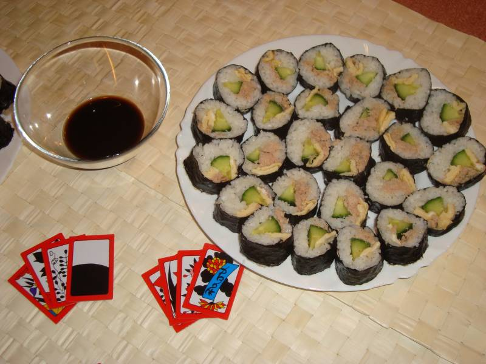
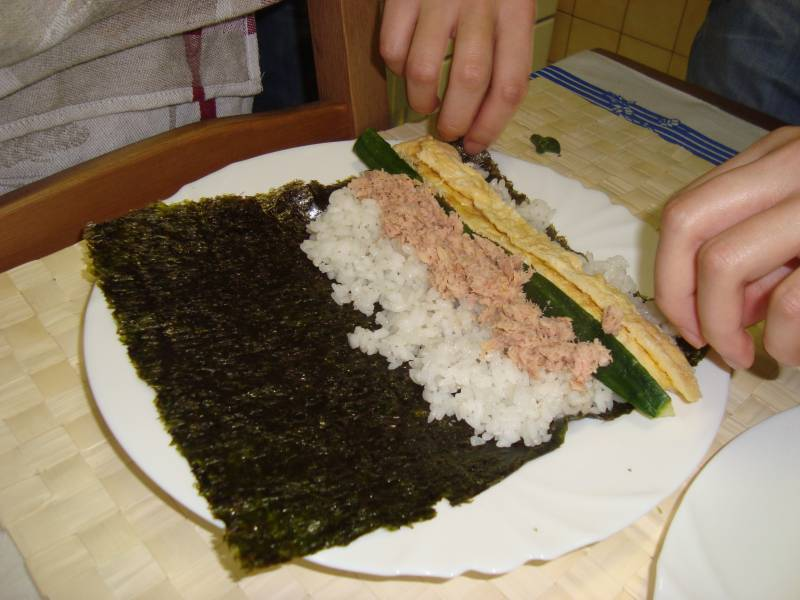
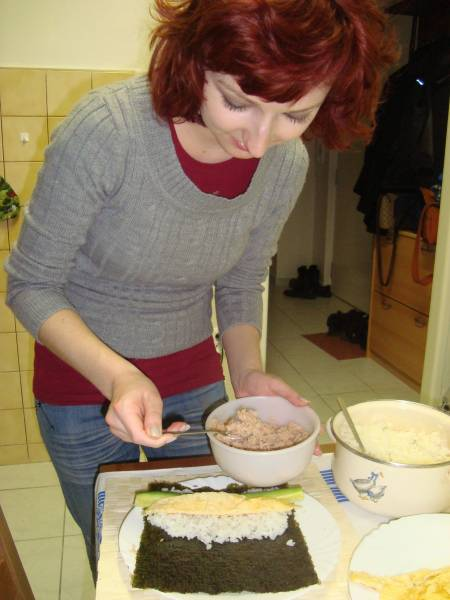
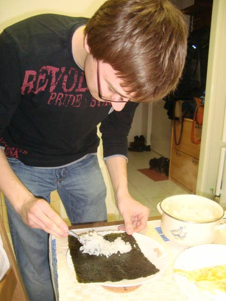
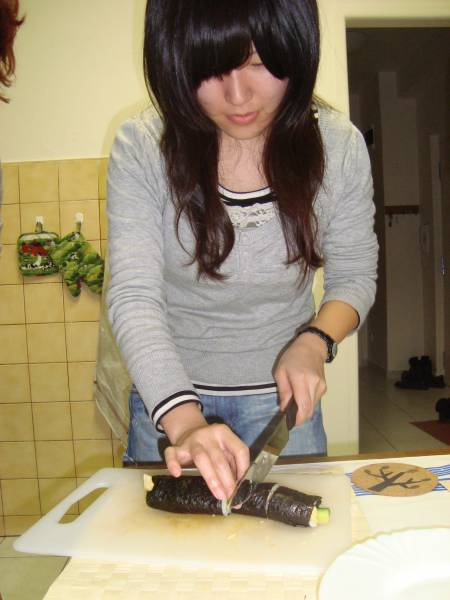
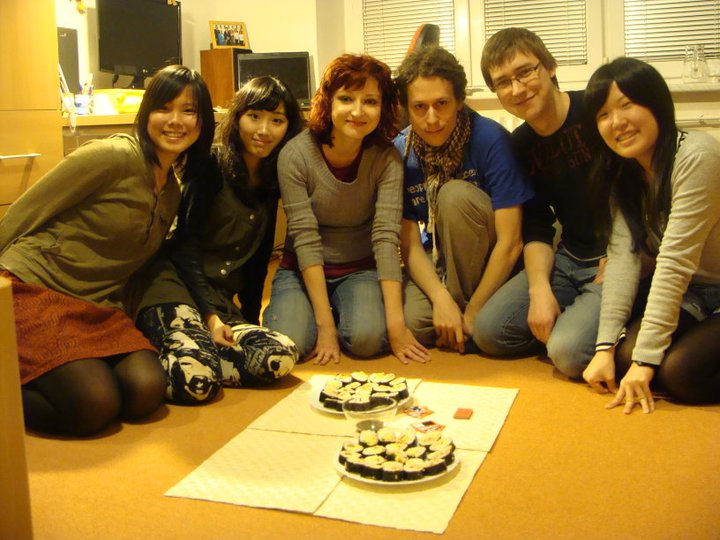

Abych to tu zase nezahlcovala literárními články (mám v záloze nachystané další dva O:-)…), rozhodla jsem se zavzpomínat na poměrně nedávnou akci plnou angličtiny, her a dobrého jídla. Naše kamarádky z Erasmu - Julia a Phyllis - nám po Vánocích odjely zpátky na Taiwan a do Hong Kongu. Smutníme po nich dodneška :_(. Aby Franta alespoň trochu zmírnil náš žal, seznámil nás brzy s novou várkou Erasmáků - HyeMin z Jižní Koree a Moe z Japonska. Vzhledem k tomu, že jídlo je hned po alkoholu druhý nejlepší prostředek na odbourání zábran, rozhodli jsme se uspořádat opět nějakou vařící párty. A abychom zne/využili návštěvu z Japonska, řekli jsme si, že by bylo fajn naučit se pravé nefalšované sushi…takže jsme si vlastně pozvali holky na návštěvu, aby nám uvařily večeři, ehm :D.

Sushi a korejská hra “Go Stop”…obojí vyvolává rychlou a těžkou závislost 8-)
Pokud si budete chtít připravit sushi s námi, vězte, že budete potřebovat:
- balení řasy “nori”(zakoupíte v exotickém koutku v Tescu či jiném větším obchoďáku)
- kulatozrnnou rýži
- 2 plechovky tuňáka(syrová ryba by se asi těžko sháněla 8-) )
- salátovou okurku
- pár vajíček
- worchester, balzamikový ocet či jiné ochucovadlo, které doma najdete :-)
Nejprve si tedy dáme vařit rýži - kulatozrnná rýže je prý na sushi lepší, protože více lepí. Mezitím si omyjeme, oloupeme a pokrájíme okurku na přibližně stejné podlouhlé hranoly (viz. foto). Na pánvi si připravíme klasickou vaječnou omeletu, kterou rovněž nakrájíme na stejně dlouhé proužky. Z plechovkového tuňáka slijeme olej a rozdrtíme ho v misce. Holky ho ještě osolily - já bych třeba spíš místo toho přidala trochu citronové šťávy. A teď příjde ta nejdůležitější část - smotávání. Na prkénko si rozprostřeme řasu nori - je důležité rozlišit rubovou a lícovou stranu - a asi do poloviny na ni navršíme rýži a na ni plátek okurky, vaječné amolety a tuňáka.

…a jdeme motat :-)
Zpočátku, než získáte grif, bych doporučila to s množstvím surovin moc nepřehánět, aby se vám sushi-roláda dobře smotávala a nebyla moc tlustá :-). Protože v balení z Tesca bylo řas deset, mohl si každý z nás s většími či menšími úspěchy umotat svou vlastní rolku :-) - na fotkách si můžete prohlédnout, jak nám to šlo :-)…

Janie v akci ;)

Franta se s tím taky popral

A Moe už nám krájí sushi :)
Když jsme měli všichni umotáno, Moe rozkrájela rolky na jednotlivé kousky sushi a přišla nejzábavnější část večera - ochutnávání O:-)! (Jak si tu tak píšu, docela se mi začínají sbíhat sliny - nejspíš budeme muset brzy uspořádat další sushi párty :-).) Výsledné dílko se nám opravdu povedlo - jak chuťově, tak po estetické stránce. Dva velké talíře sushi (šest rolek) byly během chvilky prázdné a naše chuťové pohárky blažené. Jako “dip” jsme využili worchestrovou omáčku, která se jevila z našich domácích zásob jediná celkem použitelně :-).

Skupinovka s hotovým výtvorem :-)
Tak doufám, že jsem vás svým článkem nalákala a také zatoužíte vyrobit si své vlastní sushi. Opravdu na tom není nic kdovíjak složitého. A když jsme to zvládli my v našich bojových studentských podmínkách, zvládnete to určitě taky :-)!